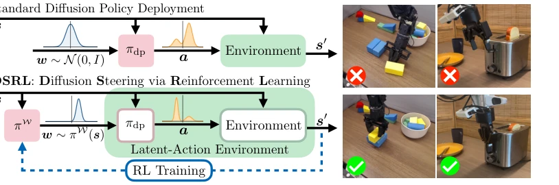
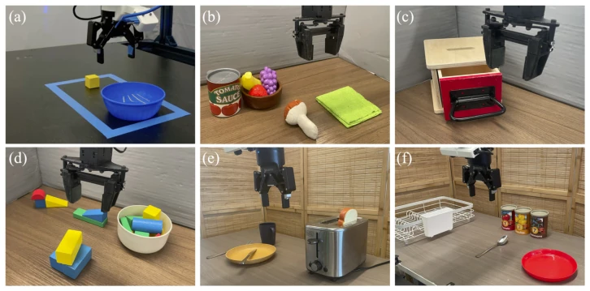

This paper proposes a novel perspective on the 'fine-tuning' dilemma of diffusion policies: do not modify weights, modify the input noise instead. This 'indirect control' strategy indeed saves considerable effort, as backpropagation through the entire diffusion denoising chain is simply a breeding ground for numerical disasters, prone to gradient explosion. The authors treat the noise space as the action space and use RL to 'train' it; black-box access suffices, making it friendly to closed-source models without worrying about weight leakage. However, whether this approach is a panacea remains questionable, as the controllability of the noise space depends on the 'steerability' of the base policy. If the base itself is beyond repair, tuning noise might just be searching for gold in a trash heap, or even getting stuck in local optima. But at least on large models like π0, it proves that the base model can be made to 'listen' without major surgery. Compared to traditional fine-tuning, this lightweight adaptation holds significant practical value for real robots and deserves a positive review.
Diffusion policies [7] based on Behavior Cloning (BC) have become mainstream in robot control, but once deployed performance is suboptimal, the traditional approach is to collect more human demonstrations, which is costly and time-consuming. Although Reinforcement Learning (RL) can theoretically improve online, directly performing RL fine-tuning on diffusion policies (e.g., DPPO [21]) faces huge challenges: requiring backpropagation through multi-step denoising processes, computationally expensive and numerically unstable [21, 22, 23]. Furthermore, general large models like π0 [6] have huge parameter counts, fine-tuning is even more challenging, and often requires white-box access. Existing methods either rely on white-box weight updates or have low sample efficiency, unable to adapt quickly on real robots. Therefore, there is an urgent need for a strategy improvement method that does not require modifying base weights and can efficiently adapt online only through black-box interfaces, to solve the policy degradation problem in open-world scenarios.
The core idea is Diffusion Steering via Reinforcement Learning (DSRL). The pipeline is divided into two steps: first mapping the original MDP to a latent noise space MDP (MW), where action a is replaced by noise w ~ N(0, I). The RL agent learns policy πW to output w, input to base diffusion policy πdp to generate actual action a. The innovation lies in the DSRL-NA variant: utilizing the 'Noise Aliasing' property, i.e., different w may map to the same a. It maintains two Critics: QA evaluates value in action space, QW distills QA's information in noise space. This utilizes offline data (via QA) and avoids sampling the same action repeatedly during online exploration, significantly improving sample efficiency. The whole process relies only on forward propagation, no weight access required, achieving true black-box adaptation. Furthermore, the method avoids the common policy collapse problem in traditional RL fine-tuning, because noise space is usually smoother than action space, and πdp is fixed as part of the environment, ensuring training stability.

Figure 1: Overview of our proposed approach, Diffusion Steering via Reinforcement Learning (DSRL). Standard deployment of a BC-trained diffusion policy πdp first samples noise w ∼N(0, I) that is then denoised through the reverse diffusion process to produce an action a. We propose modifying the initial distribution of w with an RL-trained latent-noise space policy πW, that instead of choosing w ∼N(0, I), chooses w to steer the distribution of actions produced by πdp in a desirable way, enabling highly sample efficient real-world adaptation of robot policies.
Experiments cover simulation (OpenAI Gym, Robomimic), real robots (Franka, WidowX) and general models (π0). On Robomimic, DSRL online adaptation efficiency is 5-10 times higher than baselines like DPPO, success rate improved from 20% to 90%. In real scenarios, single task Pick-and-Place task leaped from 20% to 100%, while RLPD completely failed. For π0 [6], in Libero simulation and real Toast tasks, DSRL significantly improved performance with only a few samples, outperforming RESIP and V-GPS. Ablation studies show, noise aliasing mechanism (DSRL-NA) is 2 times more sample efficient than direct SAC sampling, and insensitive to base policy quality, even if base training data quality is poor, DSRL can effectively recover performance. This proves the method's robustness and generalization ability in real deployment.

Figure 6: Real-world robot tasks for DSRL adaptation.